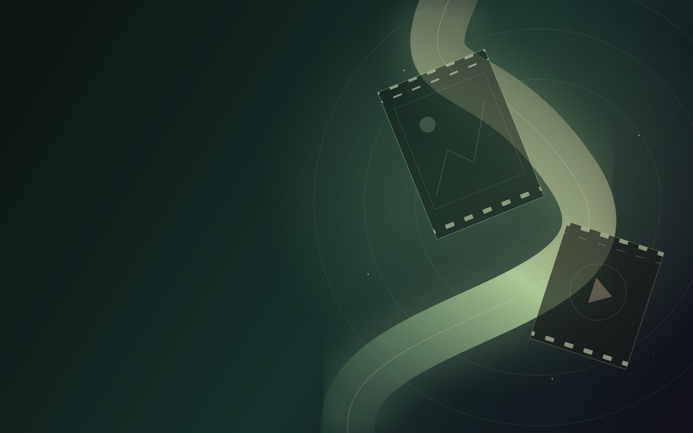

Start with your mood.
Explore mood-based discovery, recommendations and community lists when you’re deciding what to watch.

ONE LOVE. A WORLD OF CINEMA.
For the films you love. The stories you share.
And the people you could create with.
Cinema is more than something we watch.
Podiem brings movie lovers, artists and film professionals closer together. From a conversation about a film to a connection that could start the next one.
01 / PODIEM PULSE
FOR EVERY KIND OF MOVIE LOVERDiscover. Discuss. Celebrate cinema.
The film that stayed with you. The scene you can’t stop talking about. The next story waiting to become a favourite.
PULSE brings film discovery and conversation together. Explore by mood, share your perspective and rate individual departments, including acting, direction, story, music and cinematography.
LOOK CLOSER / FEEL THE PULSE
BECAUSE EVERY CRAFT ADDS SOMETHINGAn unforgettable performance. A soundtrack that follows you home. A beautifully composed shot. Podiem makes room for the different crafts that shape your experience.
Explore mood-based discovery, recommendations and community lists when you’re deciding what to watch.
Bring your own point of view through reviews, ratings, takes and film polls.
Meet other perspectives and keep exploring cinema beyond the end credits.
Some stories stay with you.
Some people help you tell them.
02 / PODIEM CREATORS
FOR THE PEOPLE WHO MAKE IT HAPPENFind talent. Create opportunities. Make films.
For artists looking to be seen, teams looking for their next collaborator and filmmakers bringing an idea into the world.
CREATORS connects professional profiles with casting calls, auditions, gigs and collaborators. Showcase photographs, videos and showreels so your work can speak for itself.
YOUR WORK. YOUR PEOPLE. YOUR NEXT STEP.
Bring photographs, videos and showreels into your professional portfolio. Give collaborators a way to discover what you do.
Discover casting calls and gig work, and connect with opportunities relevant to your creative journey.
Connect across artists, actors, directors, technicians and crew. Great stories need more than one kind of talent.
COMMUNITY / PANELS
Panels brings community discussions, debates and threads into the experience. From a fan theory to a regional-cinema conversation, find a topic that gives you something to say.
ONE EVOLVING ECOSYSTEM
A future part of the storytelling journey.
A planned space for production resources.
Scriptwriting tools and the production resources marketplace remain future-facing concepts. Explore the current application through the official store links below.
BEFORE YOU JOIN
Discover films, exchange opinions and connect with creative talent through PULSE and CREATORS.
Share a view on the individual crafts behind a film, alongside your overall experience.
Present your work and explore opportunities through CREATORS.
Panels are spaces for community discussions, debates and threads about films, shows and shared interests.
These are future-facing concepts and are shown separately from the current overview. This page does not present them as released.
The buttons open the official Google Play and App Store listings. Check the store’s device requirements. The Apple listing includes supported Apple silicon Macs; no Windows installer is offered here.
Email support@podiemapp.com. For company enquiries, contact future@sentinet.in.
YOUR NEXT CONNECTION STARTS HERE
Explore Podiem on the devices you use.
Download from your preferred app store.
On your phone, choose your app store to install Podiem. On a laptop, these links open the official store listings. Installation depends on store availability and device compatibility; a Windows installer is not linked by the official site.
The App Store listing includes compatible Apple silicon Macs. Check the current requirements in the store before installing.